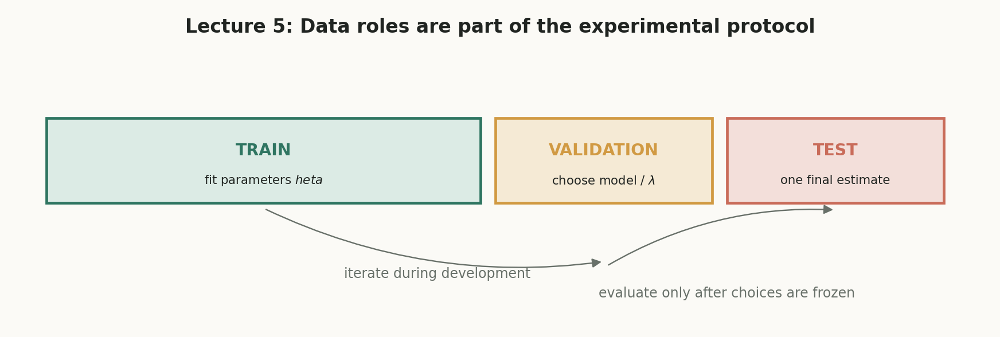
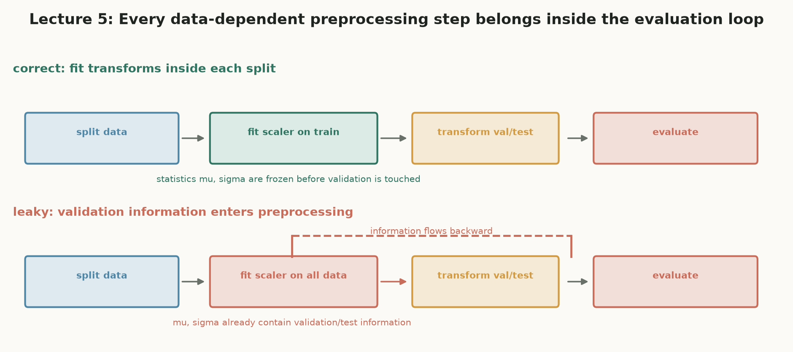
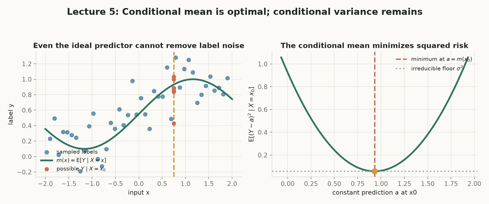
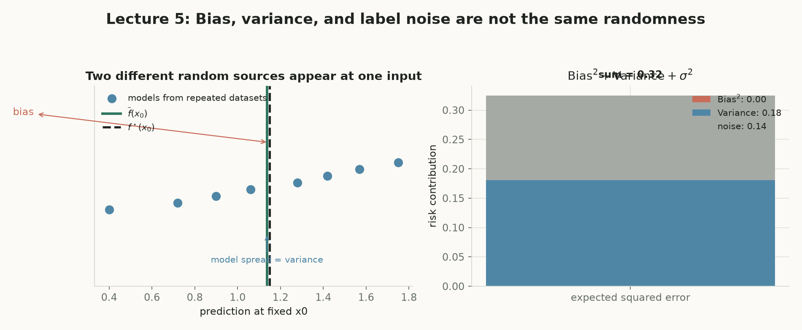
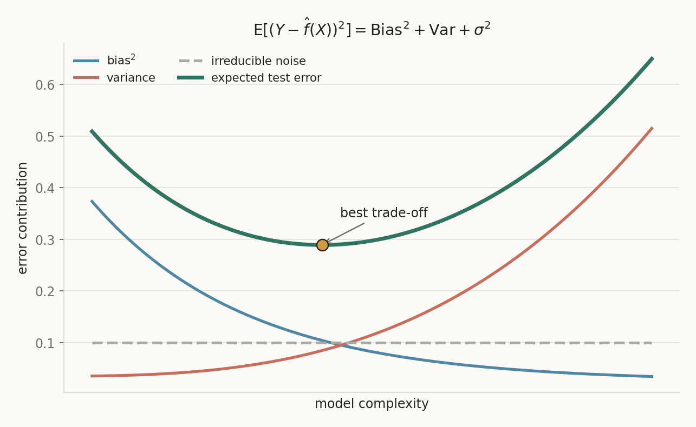
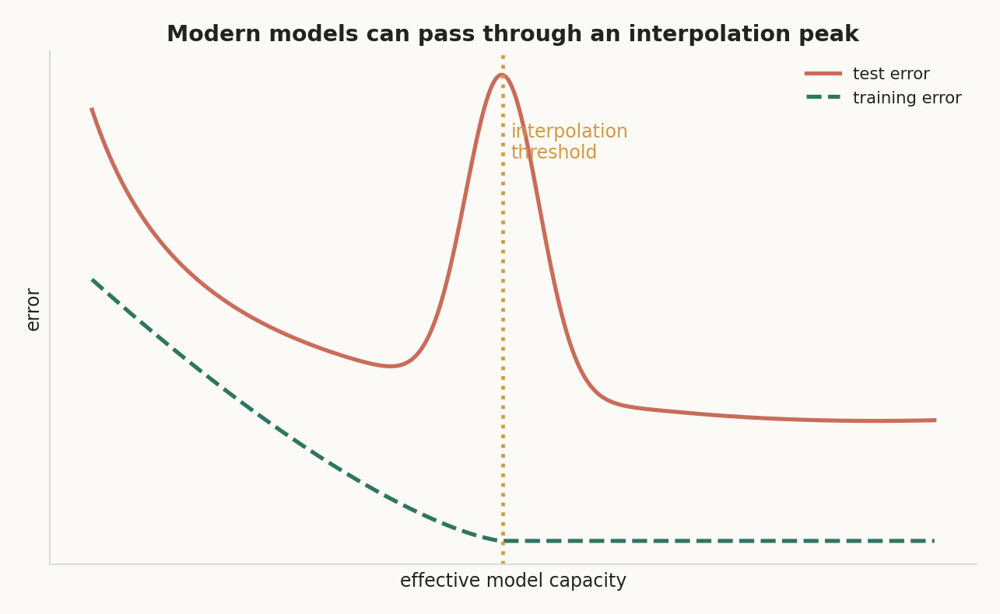

第 5 讲 · 互动附属页
Generalization（泛化）
第 1–4 讲研究“怎样把训练目标优化好”；本讲问一个更根本的问题：训练误差已经很低，为什么模型在新数据上仍然可能很差？答案的骨架是：数据是随机抽样，经验风险只是总体期望风险的有限视图，泛化误差可以分解为偏差、方差与不可约噪声。
训练误差低 ≠ 泛化好
一个能把训练集背下来的模型，对第 101 套尚未成交的房可能毫无把握。
评估本身也可能被污染
测试集一旦参与选择就失去中立性；预处理统计量沿时间线回流就是数据泄漏。
随机抽样 → 两个风险 → 三份数据 → 噪声底线 → 三项分解
先承认数据随机，再区分手里能算的和真正关心的，最后用分解解释误差从哪来。
概念地图：点击节点跳到对应小节
实线是核心路径；紫色节点属于拓展。箭头从方块边界出发，在另一方块边界结束，避免穿过节点。
核心1. 经验风险 vs 期望风险
比较这两个量之前，先把预测函数 $f$ 当作固定的——稍后再把“$f$ 是由随机训练集学出来的”这层随机性加回来。记号约定：带帽子的 $\widehat R_D$ 是经验量（有限求和），不带帽子的 $R$ 是总体期望。
是什么
经验风险 $\widehat R_D(f)=\frac1n\sum_{i=1}^n\ell(Y_i,f(X_i))$；期望风险 $R(f)=\mathbb E_{(X,Y)\sim P_{X,Y}}[\ell(Y,f(X))]$。
白话理解
一个是“这份作业的平均分”，一个是“今后所有同类考试的平均分”。前者是后者的一张有限快照。
干嘛用
$\widehat R_D$ 是训练时唯一可算的目标；$R$ 才是部署后真正关心的量；差 $R-\widehat R_D$ 叫 泛化间隙。
怎么算
样本来自 i.i.d. 假设：同分布（每个样本与未来测试点来自同一 $P_{X,Y}$）+ 独立（一个样本不改变其他样本的抽样概率）。
为什么重要
泛化间隙可正可负，但训练主动压低 $\widehat R_D$，所以学到的模型往往显得乐观。三种“最优”不要混淆：$\widehat f_D$（受数据+函数类限制）、$f_\mathcal F^\star$（只受函数类限制）、$f^\star$（理想基准）。且 $\widehat f_D=\mathcal A(D)$ 是随机函数，要研究的是 $\mathbb E_D[R(\widehat f_D)]$。
讲义的数值例题：$X\in\{0,1\}$ 等概率、$Y=X$、模型 $f(x)=0$、0-1 损失。期望风险恒为
$$R(f)=\frac12\cdot 0+\frac12\cdot 1=\frac12.$$
但若训练集恰好是 $D=\{(0,0),(0,0)\}$，则 $\widehat R_D(f)=0$——训练集碰巧没抽到 $X=1$，经验风险过于乐观。
实验 A「经验风险 ≠ 期望风险」：就是上面例题的模拟版。模型 $f\equiv0$、$Y=X$，所以 $\widehat R_D=$ 样本中 $X=1$ 的比例，而 $R=1/2$ 固定。默认 $n=2$：有 $1/4$ 的概率抽成全 $0$，此时 $\widehat R_D=0$——正是讲义例题。两个按钮都真用 Math.random()。
核心2. train / validation / test 与数据泄漏
三份数据的分工：training set 拟合参数，validation set 选择特征/模型类/正则强度/学习率/early stopping，test set 只在流程冻结后最终评估一次。validation 已参与选择，不能再当中立评估者。
是什么
数据泄漏 指验证或测试信息进入训练或选择过程，使评估偏乐观。
白话理解
考官只要提前看过考卷的统计特征，分数就不再能说明真实水平。
干嘛用
保证 $\mathbb E[\widehat R_{\mathrm{test}}(\widehat f)\mid\widehat f]=R(\widehat f)$ 成立，测试误差才是条件无偏估计。
怎么算
逐步：期望线性性把平均拆成逐项期望 → 独立同分布使每项等于同一个 $R(\widehat f)$ → $m$ 个相同量平均；方差 $\sigma_\ell^2/m$。
为什么重要
若测试集曾参与挑特征或调阈值，第二步独立性就不成立。总原则：任何需要从数据估计参数的步骤都属于训练流程——先标准化再划分、先特征选择再 CV、打乱时间顺序，都是泄漏。
固定 $\widehat f$、测试集 $m$ 个样本独立同分布时：
$$\mathbb E\bigl[\widehat R_{\mathrm{test}}(\widehat f)\mid\widehat f\bigr]=\frac1m\sum_{j=1}^m\mathbb E\bigl[\ell(Y'_j,\widehat f(X'_j))\mid\widehat f\bigr]=\frac1m\sum_{j=1}^m R(\widehat f)=R(\widehat f),\qquad \operatorname{Var}\bigl[\widehat R_{\mathrm{test}}(\widehat f)\mid\widehat f\bigr]=\frac{\sigma_\ell^2}{m}.$$
第一行用期望的线性性；第二步用“测试点与产生 $\widehat f$ 的过程独立且同分布”；第三步只是把 $m$ 个相同量平均。数据集名称不保证独立性——重要的是信息是否越过边界。
实验 B「测试误差的波动」：把单样本损失看成伯努利变量（0-1 损失下 $\sigma_\ell^2=R(1-R)$）。重复 500 次抽测试集，画 $\widehat R_{\mathrm{test}}$ 的直方图，实测均值应接近 $R$、实测标准差应接近 $\sqrt{R(1-R)/m}$——验证 $1/m$ 收缩。全部真随机现算。


核心3. 平方损失下的理想预测器与噪声底线
固定输入 $X=x$，预测器此刻只能输出一个标量 $a$，要让 $\mathbb E[(Y-a)^2\mid X=x]$ 最小。记 条件均值 $m(x)=\mathbb E[Y\mid X=x]$——推导的关键是加减 $m(x)$ 后交叉项消失。
是什么
条件均值是给定 $x$ 时 $Y$ 的平均；不可约噪声 $\mathbb E_X[\operatorname{Var}(Y\mid X)]$ 是同一 $x$ 下标签自身的随机波动。
白话理解
同一套房也可能卖出不同价格；你能做的是猜中“平均行情”，剩下的波动谁也消不掉。
干嘛用
给出无模型限制时的回归基准 $f^\star$；任何模型的风险都能写成“离 $f^\star$ 多远 + 噪声底线”。
怎么算
加减 $m(x)$，展开 $(a+b)^2$，交叉项因 $\mathbb E[Y-m(x)\mid X=x]=0$ 消失。
为什么重要
它解释了为什么存在消不掉的误差下限：同方差加性噪声 $Y=f^\star(X)+\varepsilon$、$\operatorname{Var}(\varepsilon\mid X)=\sigma^2$ 时底线就是 $\sigma^2$。
逐步展开（第一步：加减 $m(x)$ 是普通恒等式；第二步：$(a+b)^2=a^2+b^2+2ab$；第三步：交叉项因子化为 $2(m(x)-a)\,\mathbb E[Y-m(x)\mid X=x]=0$）：
$$\mathbb E[(Y-a)^2\mid X=x]=\underbrace{\mathbb E[(Y-m(x))^2\mid X=x]}_{\text{与 }a\text{ 无关}}+\bigl(m(x)-a\bigr)^2.$$
第一项与 $a$ 无关，第二项在 $a=m(x)$ 时最小，所以 $f^\star(x)=\mathbb E[Y\mid X=x]$。把逐点结论对 $X$ 平均：
$$R(f)=\mathbb E_X\bigl[(f(X)-f^\star(X))^2\bigr]+\mathbb E_X\bigl[\operatorname{Var}(Y\mid X)\bigr].$$
讲义 §12 的数值例可借此复现：$f^\star(x)=2x$、$\widehat f(x)=2.5x$、$X$ 等概率取 $1,2,3$，函数误差 $\frac13(0.25+1+2.25)=\frac76$；若 $\operatorname{Var}(Y\mid X)=2$，则 $R(\widehat f)=\frac76+2=\frac{19}{6}$。
实验 C「条件均值抛物线」：固定 $x_0$，$Y\mid x_0$ 以各半概率取 $m-\delta$ 与 $m+\delta$。抛物线 $\mathbb E[(Y-a)^2\mid x_0]=\delta^2+(m-a)^2$ 由公式现算；最低点在 $a=m$、最低高度 $\operatorname{Var}=\delta^2$。移动 $a$ 滑杆看当前损失。

核心4. Bias–Variance–不可约噪声分解
本讲最重要的推导。先指出两种独立的随机来源：$D\sim P^n$ 使预测 $\widehat f_D(x)$ 改变，测试噪声 $\varepsilon$ 使标签 $Y$ 改变。注意区分：$\sigma^2(x)$ 是标签噪声（来自 $Y\mid x$），模型方差来自训练集 $D$ 的随机性；$\mathbb E_D$ 是对训练集抽样取期望，$\mathbb E_{X,Y}$ 是对总体取期望。
是什么
偏差：平均预测 $\overline f(x)=\mathbb E_D[\widehat f_D(x)]$ 离 $f^\star(x)$ 多远；模型方差：单次训练结果围绕平均预测的散布。
白话理解
换一份训练集就换一个模型；偏差是“平均而言瞄得多准”，方差是“每次打得有多散”。
干嘛用
把期望平方误差拆成可加的三项，各自对应不同的改进手段。
怎么算
先分离 $\varepsilon$（得 $+\sigma^2(x)$），再加减 $\overline f(x)$ 使交叉项消失（得 bias² 与 variance）。
为什么重要
交叉项消失不是因为某次训练碰巧平均，而是 $\mathbb E_D[\widehat f_D(x)-\overline f(x)]=0$ 恒成立。
第一步（分离测试噪声）：代入 $Y=f^\star(x)+\varepsilon$ 并展开平方，交叉项因子化为 $-2\mathbb E_D[\widehat f_D(x)-f^\star(x)]\,\mathbb E[\varepsilon\mid x]=0$（用了 $D$ 与 $\varepsilon$ 独立 + 噪声零均值）：
$$\mathbb E_{D,Y\mid x}\bigl[(\widehat f_D(x)-Y)^2\bigr]=\mathbb E_D\bigl[(\widehat f_D(x)-f^\star(x))^2\bigr]+\sigma^2(x).$$
第二步（加减平均预测，普通恒等式 $(a+b)^2$）：交叉项 $2(\overline f(x)-f^\star(x))\,\mathbb E_D[\widehat f_D(x)-\overline f(x)]=0$，于是
$$\mathbb E_{D,Y\mid x}\bigl[(\widehat f_D(x)-Y)^2\bigr]=\underbrace{(\overline f(x)-f^\star(x))^2}_{\mathrm{Bias}^2(x)}+\underbrace{\mathbb E_D\bigl[(\widehat f_D(x)-\overline f(x))^2\bigr]}_{\mathrm{Variance}(x)}+\underbrace{\sigma^2(x)}_{\text{不可约噪声}}.$$
再对 $X$ 取期望得总体版：$\mathbb E_D[R(\widehat f_D)]=\mathbb E_X[\mathrm{Bias}^2]+\mathbb E_X[\mathrm{Variance}]+\mathbb E_X[\sigma^2]$。
实验 D「bias-variance 数值复算器」（讲义 §11）：$f^\star(x_0)=5$ 固定，同一训练方法在三份独立训练集上的预测由滑杆给出。step-box 逐步现算；数轴上蓝点是三份预测、绿竖线是平均预测 $\overline f$、红竖线是真值 $f^\star=5$。


拓展5. 过参数化、最小范数解与 double descent
当 $n<d$（参数多于样本），$Xw=y$ 可能有无穷多解：若 $v\in\ker(X)$，则 $X(w_0+tv)=Xw_0=y$。训练数据无法区分这些解，但新样本可能对零空间方向敏感——它们的泛化可以完全不同。
是什么
隐式偏置：损失只要求插值，优化算法与初始化决定选哪个插值解；最小范数解 $\widehat w_{\mathrm{MN}}=X^\top(XX^\top)^{-1}y$；double descent：跨过插值阈值后测试误差可能再次下降。
白话理解
“都能得满分”的答案有无穷多个；从零出发的梯度下降偏爱最普通的那个。
干嘛用
解释过参数化模型为何仍能泛化；也提醒参数个数不是复杂度的唯一尺度。
怎么算
从零初始化、适当步长下 GD 收敛到 $\arg\min\|w\|_2^2\ \text{s.t.}\ Xw=y$；满行秩时闭式如上。
为什么重要
最小范数 ≠ 真实参数，也不保证泛化最小；double descent 是经验现象示意，不要推出“训练误差越低越好”或“参数越多越差”的绝对结论。
实验 E「最小范数插值」（讲义 §8.3）：所有满足 $w_1+w_2=c$ 的 $w$ 都是插值解。左图抛物线 $\|w\|_2^2=2(w_1-c/2)^2+c^2/2$ 现算；右图对比三个候选解的范数。默认 $c=2$ 复现最小范数解 $(1,1)$。

拓展6. 误差曲线诊断与常见误区
欠拟合 / 高偏差 / 优化失败
训练与验证误差都高，常见根源是函数类表达能力不足；也可能是特征错误或标签质量差。
过拟合 / 高方差 / 泄漏
模型穿过训练样本却在样本间振荡；或者验证信息已经泄漏进训练，评估失真。
当前划分下较稳定
但注意：这张表是诊断线索，不是数学定理——分布漂移会让 test loss 升高，即使 validation 看起来很好。
五条常见误区：先自答，再点开核对
核心收束：训练误差只是有限视图
经验风险
$$\widehat R_D(f)=\frac1n\sum_{i=1}^n\ell(Y_i,f(X_i))$$
期望风险
$$R(f)=\mathbb E_{X,Y}[\ell(Y,f(X))]$$
测试误差的条件无偏性
$$\mathbb E[\widehat R_{\mathrm{test}}(\widehat f)\mid\widehat f]=R(\widehat f),\quad \operatorname{Var}=\frac{\sigma_\ell^2}{m}$$
理想预测器
$$f^\star(x)=\mathbb E[Y\mid X=x]$$
风险 = 函数误差 + 噪声
$$R(f)=\mathbb E_X[(f-f^\star)^2]+\mathbb E_X[\operatorname{Var}(Y\mid X)]$$
三项分解
$$\mathbb E_D[R(\widehat f_D)]=\mathbb E_X[\mathrm{Bias}^2]+\mathbb E_X[\mathrm{Variance}]+\mathbb E_X[\sigma^2]$$